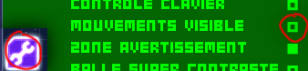
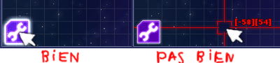
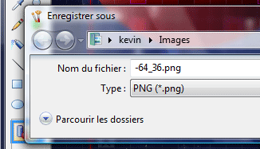
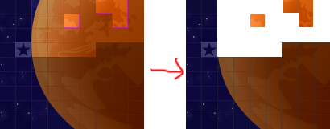

Bonjour,
Bienvenue sur ALPHA BOUNCE MAP,
la carte de l'univers faite pour vous.
Pour savoir comment utiliser cette carte, lisez ceci.
Vous possédez une information qui n'est pas présente sur la carte !
-> Indiquez-le sur le forum officiel.
Vous jouez actuellement sur une zone du jeu absente de la carte !
-> Apprenez à prendre un screen, et envoyez-le à di-zi@hotmail.fr.
Pour toutes autres choses : compliments, félicitations, remerciements, voire même fautes d'orthographe di-zi@hotmail.fr.
Merci de votre attention. (ps. pour fermer cette fenêtre cliquez dessus :)
Cette carte a pour but de rassembler des informations sur notre univers.
Et de naviguer parmi ces informations, le plus simplement possible.
Cela dans le but avoué de vous permettre à vous, détenus, de passer un agréable moment dans notre univers.
Tester pour Firefox 2
et pour internet explorer 7.
De nombreux détenus ont accumulé des informations sur notre univers,
le but aujourd'hui sera de réunir ces informations pour le bien de tous.
html
javascript(jquery)
xml
| Désactiver l'option mouvements visibles dans la clef à molette. |  |
| Placer votre souris sur le bouton clef à molette. |  |
|
Faire un screen avec la touche [ imp.écr ]. Le récupérer avec paint par exemple. Enregistrer l'image en png, surtous pas jpeg. Choisisez comme nom, les coordonnées gauche_haut. |
 |
|
Envoyer le tout à di-zi@hotmail.fr. Dernier point, un exemple de ce que je récupère dans un screen. |
 |